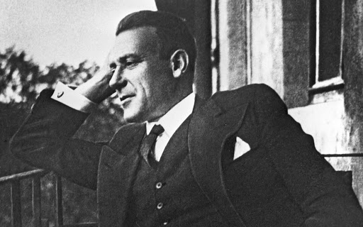
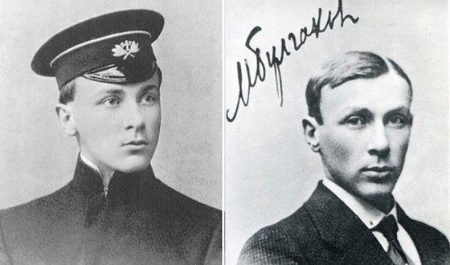
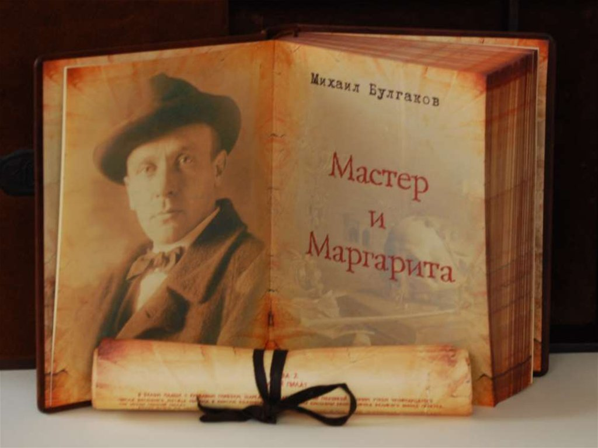
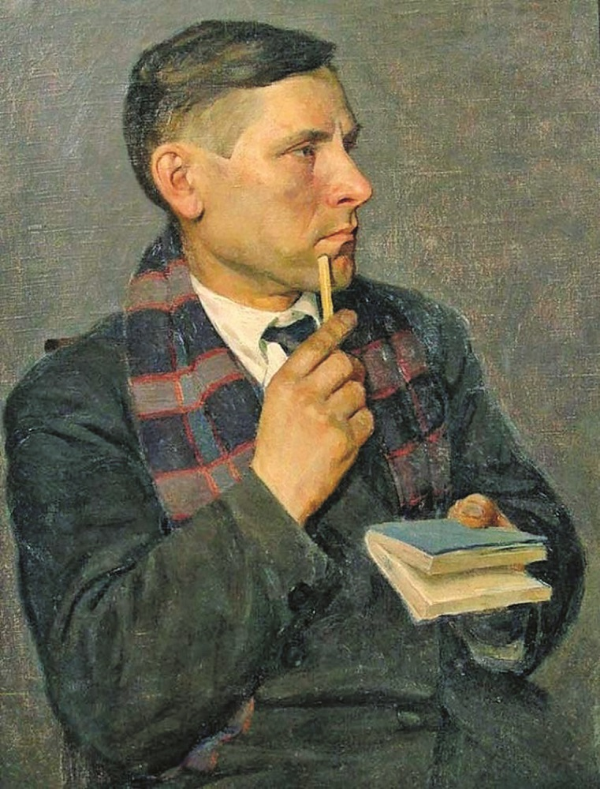
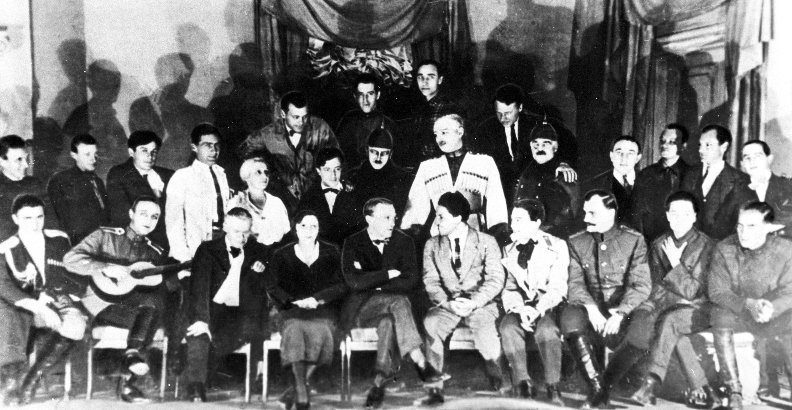
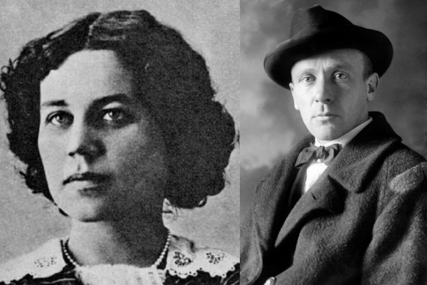
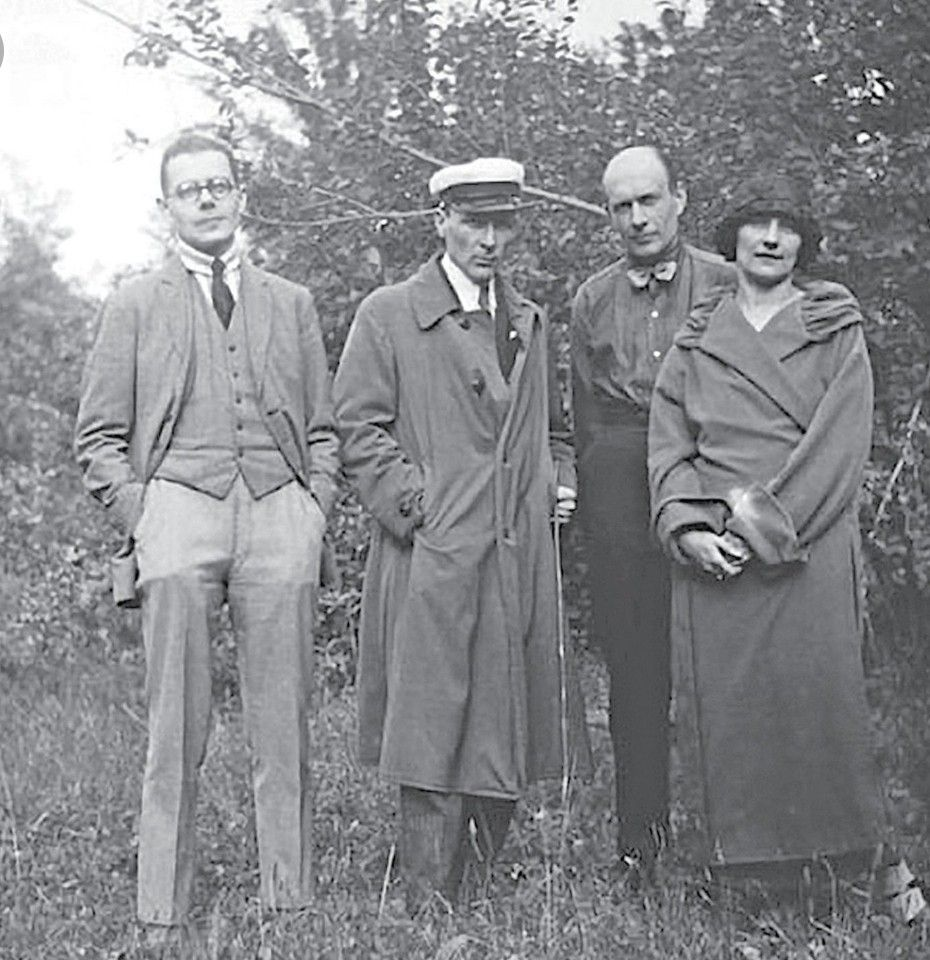
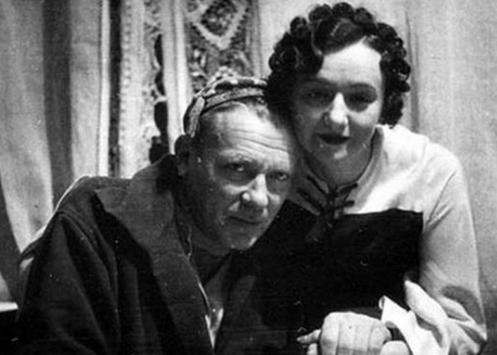

Биография
Михаил Булгаков - русский писатель и драматург, автор множества произведений, которые на сегодняшний день считаются классикой русской литературы. Достаточно назвать такие романы, как «Мастер и Маргарита», «Белая гвардия» и повести «Дьяволиада», «Собачье сердце», «Записки на манжетах». Многие книги и пьесы Булгакова были экранизированы.
Детство и юность
Михаил родился в Киеве в семье профессора-богослова Афанасия Ивановича и его супруги Варвары Михайловны, которая занималась воспитанием семерых детей. Миша был самым старшим ребенком и по возможности помогал родителям управляться с хозяйством. Из остальных детей Булгаковых известность получили Николай, ставший ученым-биологом, Иван, прославившийся в эмиграции как музыкант-балалаечник, и Варвара, которая оказалась прототипом Елены Турбиной в романе «Белая гвардия».
После окончания гимназии Михаил Булгаков поступает в университет на медицинский факультет. Его выбор оказался связан исключительно с меркантильным желанием – оба дяди будущего писателя были врачами и очень хорошо зарабатывали. Для мальчика, выросшего в многодетной семье, этот нюанс был основополагающим.
Во время Первой мировой войны Михаил Афанасьевич служил в прифронтовой зоне в должности доктора, после чего врачевал в Вязьме, позднее - в Киеве, в качестве венеролога. В начале 20-х годов он переезжает в Москву и начинает литературную деятельность, сначала как фельетонист, позднее – как драматург и театральный режиссер МХАТа и Центрального театра рабочей молодёжи.
Книги
Первой опубликованной книгой Михаила Булгакова была повесть «Похождения Чичикова», написанная в сатирической манере. За ней последовали частично автобиографические «Записки на манжетах», социальная драма «Дьяволиада» и первое крупное произведение писателя – роман «Белая гвардия». Удивительно, но первый роман Булгакова критиковали со всех сторон: местная цензура назвала его антикоммунистическим, а зарубежная пресса отзывалась как о слишком лояльном как раз к Советской власти.
О начале своей врачебной деятельности Михаил Афанасьевич поведал в сборнике рассказов «Записки юного врача», который и сегодня читается с огромным интересом. Особенно выделяется рассказ «Морфий». С медициной связана и одна из самых известных книг автора – «Собачье сердце», хотя в действительности она является тонкой сатирой на современную Булгакову действительность. Тогда же была написана и фантастическая повесть «Роковые яйца».
К 1930 году произведения Михаила Афанасьевича перестали печатать. Например, «Собачье сердце» впервые было опубликовано только в 1987 году, «Жизнь господина де Мольера» и «Театральный роман» - в 1965-ом. А самый сильный и невероятно масштабный роман «Мастер и Маргарита», который Булгаков писал с 1929 года и до самой смерти, впервые увидел свет только в конце 60-х годов и то – в сокращенном виде.
Театр
Еще в 1925 году на сцене московских театров с большим успехом ставились пьесы Михаила Булгакова - «Зойкина квартира», «Дни Турбиных» по роману «Белая гвардия», «Бег», «Багровый остров». Через год министерство хотело запретить постановку «Дней Турбиных» как «антисоветскую штучку», но решено было этого не делать, так как спектакль очень нравился Сталину, который посетил его 14 раз.
Вскоре пьесы Булгаковы были все же сняты из репертуара всех театров страны и только в 1930-ом году, после личного вмешательства Вождя, Михаил Афанасьевич был восстановлен как драматург и режиссер.
Личная жизнь
Первой женой великого писателя была Татьяна Лаппа. Их свадьба была более чем бедной – у невесты даже не было фаты, да и жили они затем весьма скромно. Кстати, именно Татьяна стала прототипом для Анны Кирилловны из рассказа «Морфий».
В 1925 году Булгаков познакомился с Любовью Белозёрской, происходившей из старинного рода князей. Она увлекалась литературой и полностью понимала Михаила Афанасьевича как творца. Писатель тут же разводится с Лаппой и женится на Белозерской.
А в 1932 году он встречает Елену Сергеевну Шиловскую, урожденную Нюрнберг. Мужчина бросает вторую супругу и ведет под венец третью. Между прочим, именно Елена выведена в самом знаменитом его романе в образе Маргариты. С третьей женой Булгаков прожил до конца жизни, и именно она приложила титанические усилия, чтобы впоследствии произведения ее любимого человека были опубликованы. Ни с одной из жен у Михаила детей не рождалось.
